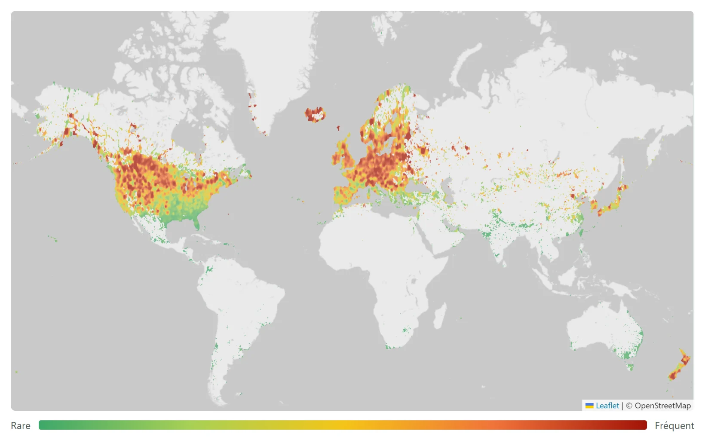
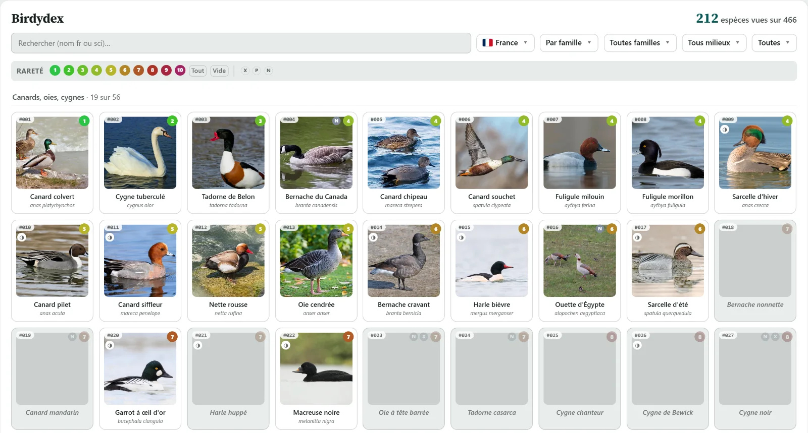
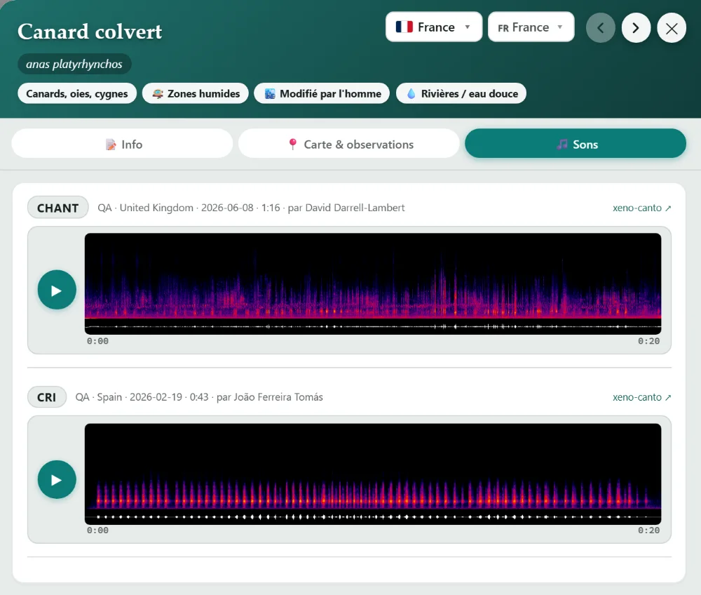
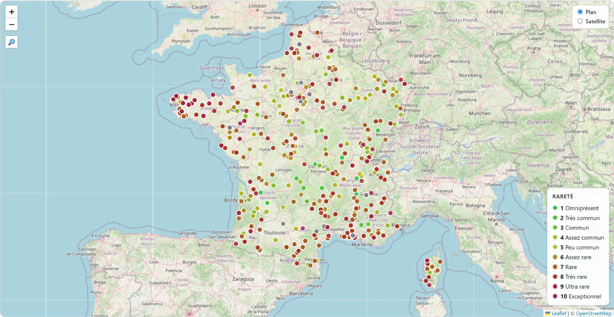
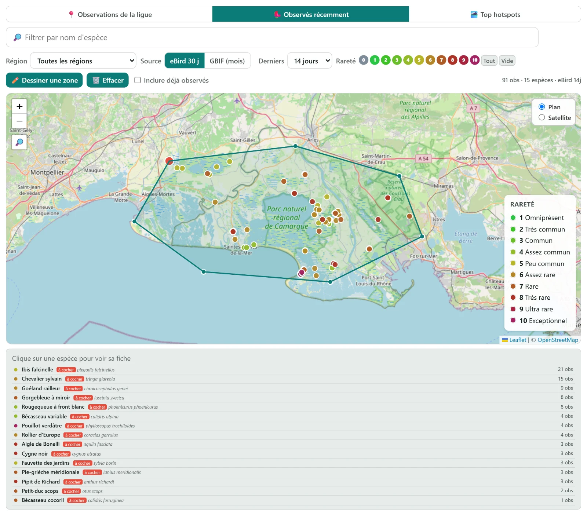

L’Ornithèque
Projet personnel · 2026
Un site pour suivre ses observations d’oiseaux entre amis. Chacun y retrouve les espèces qu’il a vues, voit où vit chaque oiseau, apprend à le reconnaître à son chant, prépare ses sorties et suit ce que voient les autres. Il y a aussi un classement, pour se comparer, mais ce n’est pas le but principal du site. Il est en service, utilisé par un groupe de dix amis, et toujours en développement.
Démonstration publique, sans compte, sur des données inventées. Le site réel est privé.

Pleine résolution ↗
Mon rôle
Avec un assistant IA
Je ne code pas, ce n’est pas mon métier : le code est écrit par un assistant IA (Claude Code), et c’est moi qui le dirige. Je lui dis quoi construire, je juge le résultat et je lui fais corriger ce qui ne va pas.
Ce qui entre dans le site
Je décide de chaque fonction, de ce qu’elle montre et de sa forme, à partir des idées que je note en me servant du site. Pour un nouvel écran, je fais proposer plusieurs maquettes et je choisis. Ensuite, je relis le site page par page et je demande les corrections.
Les données
Je choisis les sources et je vérifie qu’on a le droit de publier ce qu’on en tire. Pour les cartes de répartition, cette vérification a obligé à tout refaire : c’est raconté plus bas, avec les choix de méthode que j’ai tranchés.
Vérifier
Je teste moi-même sur le site, et je demande une preuve chiffrée avant de considérer qu’une chose marche. Onze tests automatiques rejouent le vrai site et ont attrapé quatre erreurs déjà en ligne.
Ce qu’on y fait
Suivre ses observations
Chacun dépose la liste des espèces qu’il a vues, exportée d’eBird, le site mondial où les ornithologues notent leurs observations.
En apprendre plus, apprendre à les reconnaître
Chaque espèce a sa fiche : description, milieux de vie, mensurations, carte de répartition et chants. Le Birdydex range toutes les espèces d’un pays par famille, et le quiz fait deviner une espèce à son chant.

Pleine résolution ↗

Pleine résolution ↗
Les cartes et les données
Refaire les cartes de répartition
Les cartes de répartition venaient d’abord de Cornell, le laboratoire américain qui gère eBird. En lisant leurs conditions d’utilisation, j’ai vu qu’on ne peut pas les publier sur un site sans accord écrit. Je les ai donc fait reconstruire, avec l’assistant IA, à partir des observations eBird brutes que Cornell publie en licence libre sur GBIF, la base mondiale des données sur le vivant : 1,48 milliard d’observations depuis 2015. Pour cartographier les oiseaux et non les observateurs, chaque case de la carte donne la part de l’espèce parmi toutes les observations de cette case. Le résultat : 10 896 cartes, dont 10 660 animées sur douze mois et 236 en simple présence pour des espèces absentes des données eBird.
Un exemple de rigueur
Le calendrier de chaque espèce, celui de la vidéo plus haut, cumule plusieurs années d’observations eBird, dont l’année en cours, toujours incomplète : janvier à septembre portent huit années de données, octobre à décembre sept. Sans correction, le début d’année pèse trop. La correction retenue tient compte du nombre de listes d’observations de chaque année, et elle a été validée par un test à blanc : on retire exprès une année complète et on compare à la vérité connue. Erreur médiane pour la France : 2,12 % avec la correction, 3,07 % sans, 4,09 % en jetant l’année incomplète.
Des données au site
Des dizaines de programmes de collecte et de calcul en tirent les fichiers que le site publie. La rareté de chaque espèce, par exemple, est notée de 0 à 10 selon sa fréquence réelle dans la zone choisie : c’est elle qui colore les points de la carte ci-dessous.

Pleine résolution ↗

Pleine résolution ↗
Ce qui reste imparfait
Les limites connues
Les cartes comptent des observations, sans le modèle statistique de Cornell : là où peu de gens observent, en Afrique ou en Sibérie, elles restent clairsemées.
Outils et sources
Outils
Sources
- Observations
- eBird, base de données en ligne sur la répartition et l’abondance des oiseaux, Cornell Lab of Ornithology, Ithaca, New York (ebird.org)
- Cartes
- observations eBird publiées sur GBIF, licence CC BY 4.0, téléchargements 10.15468/dl.c7y4kg et 10.15468/dl.rb9sut
- Chants
- xeno-canto
- Traits des espèces
- AVONET (Tobias et al., 2022)
- Milieux de vie
- BIRDBASE
Envie d’en savoir plus ?
Le site réel est privé : il contient les listes d’un groupe d’amis. La démonstration publique est en haut de cette page.